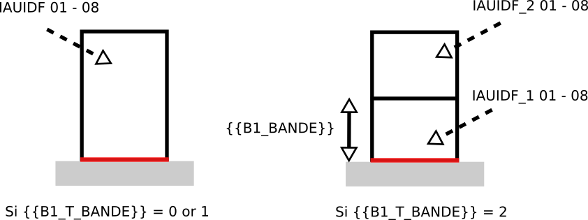

IAUIDF-000 - Bandes de constructibilité
Modèle de phrase
La parcelle comporte {{B1_T_BANDE}} bande(s) de constructibilité sur laquelle des réglements différents s'appliquent. La surface première bande est obtenue en mesurant une profondeur de {{B1_BANDE}} m à partir des limites donnant sur la voirie.
Paramètres
B1_T_BANDE
Information concernant l'existence d'une bande de constructibilité principale ou secondaire :
- 0 : pas de bande
- 1 : une bande
- 2 : deux bandes
B1_BANDE
Profondeur de la bande mesurée par rapport aux limites donnant sur voirie
Explications
S'il n'y a que zéro ou une bande de constructibilité (paramètre {{B1_T_BANDE}}), une seule série de règles s'appliquera sur l'ensemble de la parcelle. Sinon, deux séries de règles s'appliqueront sur les deux bandes de constructibilité définies à partir de la distance {{B1_BANDE}} mesurée à la voirie.

Implémentation
Pour l'instant, un bâtiment ne peut être construit que sur une seule bande de constructibilité. Ces bandes sont créées dans la classe BandProduction de SimPLU3D.